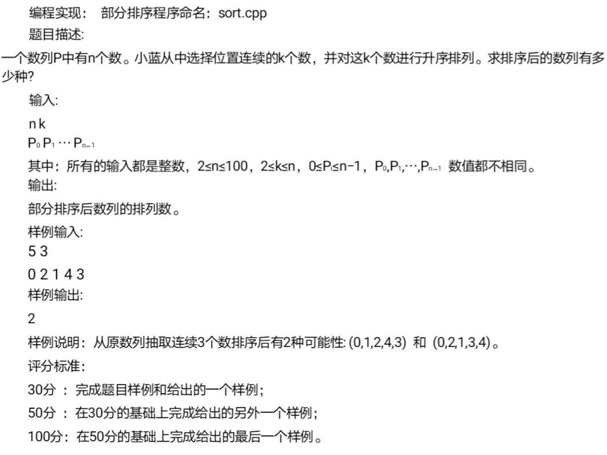

部分排序问题 链接到标题
题目 链接到标题

解题思路 链接到标题
看到题目后，有一种简单想法就是将所有 k 位的部分排序后得到的整体序列全部存起来，然后对每一个序列比较，筛除相同的序列，得到不同序列，但如果 n 与 k 的值足够大，需要使用更多的数组存储序列，时间复杂度与空间复杂度都非常高，因此必须想到一个更好的解题思路，以下是我的解题思路。
本题中，由于 k 的值不同，所以每次选择的部分排序也不同，可能存在两次或多次进行部分排序后，整体的序列排序相同。因此需要考虑在什么情况下，两次或两次以上部分排序得到的整体的序列排序也相同，因为序列相同只进行一次计算。
由于每次可以从任意位置 i(i=0,1,2,3…n)取 k 位，然后对 k 位进行升序排序，那么如果 i+1 位置开始取 k 位并进行升序排序得到的序列，和前一个位置的升序排序序列得到的序列的的交集相等，则说明这两个经过部分排序的序列得到的整体序列顺序也相等，因此说明两个序列重复，重复的序列只计算一次，如果不等说明两个序列不重复，则序列种类 +1。
代码如下 链接到标题
void Sort(int *num, int x) { //冒泡排序
int lenth = x; //数组大小
int temp;
for (int i = 0; i < lenth - 1; i++) { //冒泡排序(将数组元素升序排序)
for (int j = 0; j < lenth - 1 - i; j++) {
if (*(num + j) > *(num + j + 1)) {
temp = *(num + j);
*(num + j) = *(num + j + 1);
*(num + j + 1) = temp;
}
}
}
}
int IsEqual(int a[], int b[], int k) { //判断是否相等
Sort(a, k); Sort(b, k);
for (int i = 0; i < k - 1; i++) {
if (a[i] == b[i + 1]) continue;
else return false;
} return true;
}
int main() {
int max; //输入序列长度
cout << "输入序列长度" << endl;
cin >> max;
int k;
cout << "输入k" << endl;
cin >> k;
int *temp = (int*)malloc(sizeof(int)*k); //临时数组，负责存储从i位起k个数据，部分排序序列
int *temp1 = (int*)malloc(sizeof(int)*k); //负责保存上一个部分排序序列
for (int i = 0; i < k; i++) { //初始化
temp1[i] = 0;
temp[i] = 0;
}
int *number = (int*)malloc(sizeof(int)*max); //输入序列
cout << "序列赋值" << endl;
for (int i = 0; i < max; i++) {
cin >> number[i];
}
int sortNum = 0; //初始序列排列种类数量
int fl = 0; //移位次数
for (int i = 0; i + k < max; i++) fl++;
int lock = 0;
for (int i = 0; i <= fl; i++) {
int b = 0;
for (int j = i; j < i + k; j++) { //每次截取k位数据
if (b < k) {
temp[b++] = number[j];
}
}
int isTrue = IsEqual(temp, temp1, k);
if (isTrue) { //判断前后两次部分排序序列的交集是否相等
if (lock != 1) {
sortNum++; lock = 1;
}
}
else if (!isTrue) {
sortNum++; lock = 0;
}
for (int l = 0; l < k; l++) {
temp1[l] = temp[l];
}
} cout << "结果为:" << sortNum - 1 << endl;
system("pause");
return 0;
}